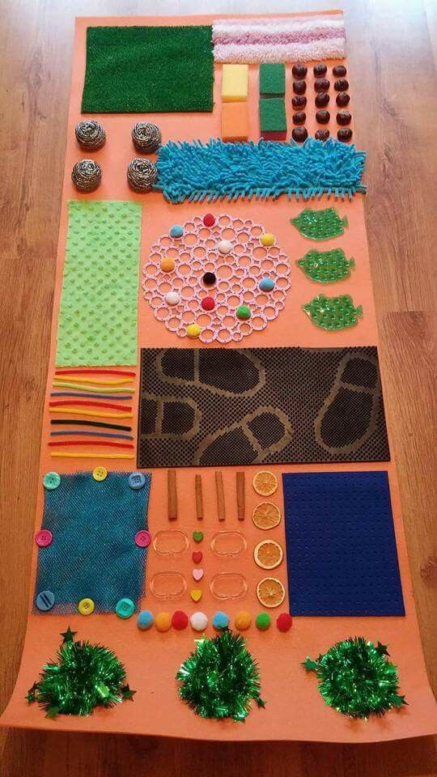

Nuestros juegos y juguetes
Una alfombra sensorial es un tipo de alfombra diseñada para estimular los sentidos de las personas, especialmente de los niños. Estas alfombras suelen tener una superficie texturizada que permite a los niños explorar diferentes texturas, colores y patrones con sus manos y pies. La finalidad de la alfombra es estimular el desarrollo del niño mediante actividades sensoriales. Puede utilizarse principalmente para ayudar a los niños con Trastorno de Procesamiento Sensorial (TPS) a sentirse más cómodos en su entorno y facilitarles el acceso a la información que puedan necesitar.
Un cubo sensorial es un espacio específico en el que se pueden trabajar experiencias sensoriales controladas. Se utiliza para realizar terapias y trabajar objetivos concretos, inhibiendo estímulos sensoriales y activando solo los que se quieren. También es un juguete que ofrece diferentes texturas, sonidos y colores para estimular los sentidos del bebé. Al explorar el cubo sensorial, los bebés pueden desarrollar habilidades motoras finas al agarrar y manipular los objetos.
Un cubo didáctico multiactividad-sensorial es un juguete que ofrece diferentes actividades para estimular los sentidos y habilidades motoras finas de los niños. Este cubo generalmente tiene cinco lados, cada uno con una actividad diferente. Algunas de las actividades comunes incluyen: Encastre geométrico de figuras con cordón: Los niños pueden aprender a identificar formas y colores mientras trabajan en su coordinación mano-ojo. Panel visual y giratorio: Los niños pueden girar el panel para ver diferentes patrones y colores, lo que ayuda a estimular su percepción visual. Buscacamino con lapiz imantado: Los niños pueden usar un lápiz magnético para guiar una bola de acero a través de un laberinto, lo que ayuda a desarrollar su coordinación mano-ojo y habilidades motoras finas. Prono laberinto: Los niños pueden mover cuentas a través de un laberinto, lo que ayuda a desarrollar su coordinación mano-ojo y habilidades motoras finas. Encastre de formas y números: Los niños pueden aprender a identificar formas y números mientras trabajan en su coordinación mano-ojo.
Un libro sensorial es un tipo de libro que utiliza diferentes texturas, sonidos y colores para contar una historia y estimular los sentidos del lector. Estos libros están diseñados para promover el aprendizaje y el desarrollo de habilidades básicas en los niños, como la coordinación mano-ojo y la memoria. Los libros sensoriales son una herramienta novedosa para promover el aprendizaje y el desarrollo de habilidades y destrezas en bebés y niños pequeños con y sin discapacidades. Estos libros incorporan ilustraciones, palabras, así como diferentes texturas y sonidos para contar una historia. Tienen como objetivo promover la curiosidad, la creatividad y el uso de los sentidos, y despertar la curiosidad por explorar cosas nuevas y el mundo que los rodea.
